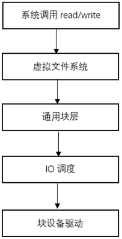
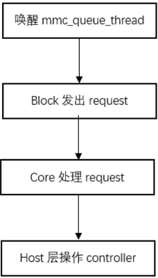

请求处理流程
15 Nov 2024
Read time: 1 minute(s)
对于应用程序，通过读写的接口访问文件系统，文件系统访问块设备，MMC 设备在内核中被注册为一个块设备，当读写的操作传入到 MMC 块设备后，通过 MMC 子系统处理相关操作，对于 MMC 子系统其处理皆以请求的方式实现。
块层以上系统读写调用流程
在块层以上，通常是用户空间调用读写接口访问 MMC 设备，主要流程如下：

- 在用户空间，应用程序调用 read/write 接口
- 然后通过虚拟文件系统
- 调用通用块层的接口对块设备进行 IO 请求
- IO 调度层负责使用特定算法对这些请求进行调度
- 块设备驱动层调用具体的块设备接口访问设备
MMC 子系统请求处理流程
MMC 子系统被抽象成一个块设备，通用块层将 IO 请求调用到具体的块设备驱动层，在 MMC 块设备驱动中的请求处理流程如下：

- 由于会有多个请求，在 block 中以队列的形式处理，在请求到达时，唤醒 mmc_queue_thread。
- 调用 block 的请求处理，发出 request。
- block 的 request 会由 core 来实现。
- core 层会根据当前 host 驱动调用对应 host 的 ops 中的 request 接口去操作 controller。
函数调用关系：
mmc_wait_for_req
|--__mmc_start_req
|--init_completion
|--mmc_start_request
|--mmc_mrq_prep
|--__mmc_start_request
|--trace_mmc_request_start
|--host->ops->request （即 request）
Host 层驱动请求处理流程
在访问 MMC 外设时，都是通过发送 CMD 的方式，在 host 层驱动中需要通过操作 controller 去实现 core 层的 request，主要流程如下：

- 检测卡设备，需要判断当前卡设备是否被拔出。
- 判断传输状态，如果当前传输状态不是 idle，那么将会将该请求放在请求队列里。
- 处理 data，如果当前请求需要处理数据，则将数据先行处理，如果不需要处理数据则跳过。
- 发送 CMD，解析请求中的 CMD 和参数，将其写入寄存器，然后触发 CMD 的发送。
- 中断处理，在发送完 CMD 后，后续的工作需要等待中断的触发，在中断处理中会对外设返回的数据和状态进行处理。
- 如果需要，发送 stop 命令，结束该次传输。
Host 层函数调用关系：
artinchip_mmc_request
|--artinchip_mmc_get_cd
|--artinchip_mmc_queue_request
|--artinchip_mmc_start_request
|--artinchip_mmc_prepare_command
|--artinchip_mmc_submit_data
|--artinchip_mmc_start_command
|--artinchip_mmc_prep_stop_abort